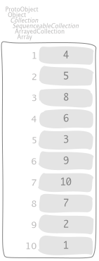

Skip lists¶
The first edition [CGG06] has a nice description of skip lists, also for the proof of the complexity. Let us reproduce their working example,
"CTSkipListTest, protocol tests"
sutCrescenzi
| collection |
collection := #( 5 10 16 18 30 41 80 ) asSortedCollection: #<.
^ CTSkipList
onSortedCollection: collection
lowerBound: Float negativeInfinity
upperBound: Float infinity
built by the message
"CTSkipList class, protocol creation"
onSortedCollection: aCollection lowerBound: lower upperBound: upper atRandom: aRandom
| brgc lists nothing cleanLists lowerJust upperJust times |
nothing := Maybe nothing.
lowerJust := lower just.
upperJust := upper just.
brgc := aCollection size asBRGCCollection.
lists := nil.
times := aCollection
ifEmpty: [ 0 ]
ifNotEmpty: [ (aCollection size log: 2) floor + 1 ].
times timesRepeat: [
| list link nextLinkSafe |
link := lists value.
nextLinkSafe := [ link := link ifNotNil: [ link nextLink ] ].
list := CTDoubleValueLink new
value: lowerJust;
previousLink: link;
nextLink: nil;
yourself.
nextLinkSafe value.
aCollection withIndexDo: [ :each :index |
| left eachForList |
left := brgc at: index.
eachForList := left > 0
ifTrue: [ each just ]
ifFalse: [ nothing ].
brgc at: index put: left - 1.
list := CTDoubleValueLink new
value: eachForList;
previousLink: link;
nextLink: list;
yourself.
nextLinkSafe value ].
list := CTDoubleValueLink new
value: upperJust;
previousLink: link;
nextLink: list;
yourself.
nextLinkSafe value.
self assert: link isNil.
lists := list reversed ~~> lists ].
cleanLists := lists.
[ cleanLists ] whileNotNil: [
| list |
list := cleanLists value.
[ list ] whileNotNil: [
| each |
each := list nextLink.
[ each value == nothing ] whileTrue: [ each := each nextLink ].
list := list
value: list value content;
nextLink: each;
nextLink ].
cleanLists := cleanLists nextLink ].
^ self new
lists: lists;
sortBlock: aCollection sortBlock;
lowerBound: lower;
upperBound: upper;
random: aRandom;
yourself
used with a geometric random object,
"CTSkipList class, protocol creation"
onSortedCollection: aCollection lowerBound: lower upperBound: upper
^ self
onSortedCollection: aCollection
lowerBound: lower
upperBound: upper
atRandom: ((RandomGeometric seed: 541)
p: 0.5;
yourself)
The lookup message,
"CTSkipList, protocol testing"
includes: aKey equalityBlock: eqBlock
| link |
link := (self predecessors: aKey) value.
^ eqBlock value: link nextLink value value: aKey
allows us to assert that

is included in the list by means of the interactions,

The search performed during lookup is actually implemented in
"CTSkipList, protocol accessing"
predecessors: key
| link predecessors |
predecessors := nil.
link := lists value.
[ link ] whileNotNil: [
[ sortBlock value: link nextLink value value: key ] whileTrue: [
link := link nextLink ].
predecessors := link ~~> predecessors.
link := link previousLink ].
^ predecessors
and is used also by insertion; by the way, in the second edition [CGGR12] is explained the insertion of
at height 4 that produces
by means of the messages
"CTSkipList, protocol accessing"
add: key atHeight: r
| predecessors height newLink |
predecessors := self predecessors: key.
height := self height.
newLink := self
add: key
atHeight: (r min: height)
predecessors: predecessors.
r > height ifTrue: [
| newList list |
list := lists value.
newList := CTDoubleValueLink new
value: lowerBound;
previousLink: list;
nextLink: (CTDoubleValueLink new
value: key;
previousLink: newLink;
nextLink: (CTDoubleValueLink new
value: upperBound;
previousLink: (list ifNotNil: [ list last ]);
nextLink: nil;
yourself);
yourself);
yourself.
lists := newList ~~> lists ]
and
"CTSkipList, protocol accessing"
add: key atHeight: r predecessors: aLink
| newLink predecessors |
predecessors := aLink.
newLink := nil.
r timesRepeat: [
| predecessor |
predecessor := predecessors value.
newLink := CTDoubleValueLink new
value: key;
previousLink: newLink;
nextLink: predecessor nextLink;
yourself.
predecessor nextLink: newLink.
predecessors := predecessors nextLink ].
^ newLink
respectively. In order to see randomization, we add elements
one after the other to obtain the list

which is initially built from an empty sorted collection. Here is what happened,

Last, an arbitrary list with
elements looks like,